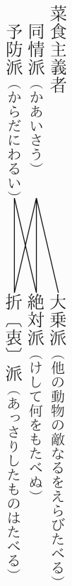

去る九月四日、花巻温泉で第十七回極東ビジテリアン大会が行はれた。これは世界の食糧問題に対する相当の陰謀をも含むもので昔は極めて秘密に開催されたものであるさうであるが今年は公開こそはしなかったが別にかくしもしなかったやうだ。
たぶんそれは世界革命の陰謀などにくらべると余りこどもじみたものなので誰もびっくりしないためであったらうと思はれる。
その代りその会合たるや極めて古典的で当時温泉に浴してこれを見聞した筆者の無為を慰すること甚大であった。
元来ご承知のごとくビヂテリアンといふのは動物質のものを食べないといふ考のものの団結であり、日本では菜食主義者と訳するけれども主義者といふよりは、〔〕むしろ菜食信者といふ方が、よく実際に適ってゐるとも思はれる。
そ〔〕の中にはいろいろ派があるやうであるが、大体そのテーゼについて大きくわけると、同情派と予防派との二つになるらしい。
同情派と云ふのは、恰度仏教の中でのやうに、あらゆる動物はみな生命を惜むこと、我々と少しも変りはない、それを一人が生きるために、ほかの動物の命を奪って食べるそれも一日に一つどころではなく、百や千や万の〔〕こともある、これを何とも思はないでゐるのは全く我々の考が足らないのでよくよく喰べられる方になって考へて見ると、とてもかあいさうでそんなことはできないとかう云ふ思想をもつものであり予防派の方はじぶんの病気予防のために、なるべく動物質をたべないといふのであくまで利己的な連中の集りである。
ところがこれをテーゼによらずact―の方法から分類すると、三つになる。第一は絶対派ともいふべく動物質のものは全く喰べてはいけないと、獣や魚やすべて肉類はもちろんミルクや、またそれからこしらえたチーズやバター、菓子の中でも鶏卵の入ったカステーラなど、一切いけないといふ考の人たち、日本ならばまあ、一寸鰹のだしの入ったものもいけないといふ考のであり第二は折〔衷〕派とも〔数文字分空白〕チーズやバターやミルク、それから卵などならば、さし支へない、といふ、割合温健な考である。ところが第三は大乗派ともいふべくいくら物の命をとらない、自分ばかりさっぱりしてゐると云ったところで、そのため誰かゞもっと迷惑してゐては、何にもならない、結局はほかの動物がかあいさうだからたべないのだ、もしある動物がほかのたくさんの動物の敵であるときはそれは食ってもいゝといふことになってゐて、今までの調査では鰯を食ふ鯨、猛禽類則ち鷹、ふくらふみゝづく、それからどぜうをたべる鷺のごときもの殊に所謂益鳥といはれてゐるものは〔悉〕く沢山の虫類を食ふことを特徴としてゐるから差支えなく魚でも、鮎のごときは硅藻をたべてゐるのでじつに可哀さうなものであり鰻や鯉のごときはその鮎をはじめとしてあらゆる川中の小魚を食ふから断じてとって食っていゝといふのである。肉食獣則ち、獅子、虎、豹の類、最后にこれらのものを食べる人間則ち主義者自身ももし需要があれば絶対に食はれることを避けてはいけないといふ規則である〔。〕
以上を図解するとかうである〔。〕

そしてこの両派三派はあらゆる機会に於てみなこの主張をやるのであるが今年の大会に於ても果せる哉やった。
そこで、〔前〕置はこれ丈として以下その顛末を〔〕申しあげる。
筆者が〔以下原稿数枚なし〕
それから
「アナタ、タヾノオキャクサンゴザイマスカ。」と云った。
「タヾノオキャクサン」筆者は甚考へた。これ或は温泉で催すといふ花火会のことであるか、或はこれ郷土舞踊大会であるか。筆者は首をひねった。先方はむじゃむじゃ毛の生えた太い指でポケットから小さな容器をだして一種の丸薬数〔顆〕をつまんでぷっと口に投げながら云った。
「デハヨロシイ。サヨウナラ。」そしてさっさと大股に滝の方へ行ってしまった。筆者唖然たらざるを得ない。松雲閣の玄関からそのまゝ事務所へ廻りみちして支配人の福地第三郎君に会った。
「さあお掛け下さい。」
第三郎氏はじぶんで椅子をすゝめた。
「外国人が来てゐますな。」
「えゝ、沢山来て居ります。あした会があるので。」
「ほう。会場はどこですか。」
「紅葉館です。」「何人ぐらゐですか。〔」「〕四十人位といふ通知です。」「みんな来てゐるんですか。」「半分ぐらゐもう来てゐるやうです。ゆふべ来た人もあります。」「全体何の会でせう。」「これです。」支配人は〔二〕通の宛名を打った書状を出した。
見ると第一通は英文で温泉へ宛てた四十人宿泊準備の依頼状で特に食事は白米の飯と大根の味噌汁と香の物だけを仕度してくれ但し価格は一日十円以内といふ 第二通は仲間へ出した活字の通知状であった。
「第十七回極東ビヂテリアン大会〔〕 一九三一年九月四日正午より。日本、東北本線花巻駅乗換、花巻温泉紅葉館にて。
協議事項、各派合同による新運動の策戦について。会員は前日
 に同所着のこと。」
に同所着のこと。」といふのであった。〔以下原稿数枚なし〕
それから松雲閣へ帰って一つ風呂を浴びてやれといふ気持ちで更衣室に行くとこれは又さっきの異人が宿から縞の唐〔桟〕の袷を着せられてかんかんと椅子に座ってパイプをくわいて時事新報を見てゐたもんである。筆者は思はずハローとやった。すると向ふは落ちついて“Well,”と来たもんだ。筆者はちょっとむっとして顔をそむけた。すると向ふが意外にも「アナタオ湯オハイリゴザイマセンカ。」と云ったものだ。
「ゴザイマス。」
いま〔の〕ぶっきら棒の復讐にわざと変な文法を使ってやった。
「アナタコノヘンノオテラ、ボンゾサン シッテヰルゴザイマスカ。」
「シリマセンネエ。」筆者はもいちどすげなくやった。
「コノヘンノボンゾサン、シャカブツ五カイ、マモルゴザイマスカ。」
「ゴザイマセンネエ。」
「サケノミゴザイマスカ。」「ノミマスネエ。」「ニクルイタベルゴザイマスカ。」「タベマスネエ。」「オクサンアリマスカ。」「アリマスネエ。」異人は“Ha, ha, ha-a-a-a”と最后を顫音でわらった。それから
「デハアリガト。アナト。」と云ひながらうちはをもってちゃうど大天狗が文化的湯治に来たといふかたちでさっさと引き上げてしまった。筆者もそこで一風呂あびて室に帰ってつめたいお茶をこくりとのみそれから椽側へ出てあまり栄えもせぬおがせが滝を拝見に出ると、これはまた、さっきの大天狗殿がやはり椅子にすはってシガーをくゆらして滝を見てござったのである。そこで筆者は〔〕大びらにやっつけた。
「やあ、またお目にかゝりましたな。」「えゝ、えゝ。あなたたばこノミマセンカ。」大天狗は横の小卓から葉巻入をとりあげた。
「いやどうも。」
筆者はさっさとそれを受けとってマッチをすった。
「あしたは大会なさうですね。」「えゝ、えゝ。ケレドモマダミンナキマセンゴザイマス。」「ビヂテリアンもたばこはノムデスカ。」
「ノムデス。Tobakko ne estas animalo.」
「大会は盛んでせうね。」
「けれども邪魔はいるさうです。〔以下原稿数枚なし〕
それから松雲閣へ帰らうと例の桜小路をやってくると向ふから黄いろな自働車が事もあらうにシカゴ畜産組合といふ旗をたてゝやってきた。
そして何か変なビラのやうなものを筆者の顔へ投げつけた。乗ってゐたのは猿のやうな顔をした毛唐二人であった。筆者はビラを見た。
◎偏狭非文明的なるビヂテリアンを排す。
ビヂテリアン所説動物を愍むが故に之を食せずとは滑稽なり。それ人類の食糧と云はゞスタンダードチョイスリーダー三 フレデリック大王の質問をまたずと雖も筆者は次の一枚を読んだ。
◎偏狭非学術的なるビヂテリアンを排せ。
ビヂテリアン云ふ 動物は之を哀愍するが故に食せずと。動物が〔哀〕愍を要することいかにしてこれを別り得るや。要は人類の主観のみ。全体豚のごとき何ぞよく死のごとき高等なる観念を有せんや そはたゞ腹が空った、かぶらの茎、噛みつく、うまい、厭きた、ねむり、起きる、鼻がつまる、ぐうと鳴らす、腹がへった、麦糠、たべる、うまい、つかれたねむる、との如き一一の〔〕小き現在の連続のみ。〔以下原稿なし〕
 本文篇」筑摩書房
本文篇」筑摩書房